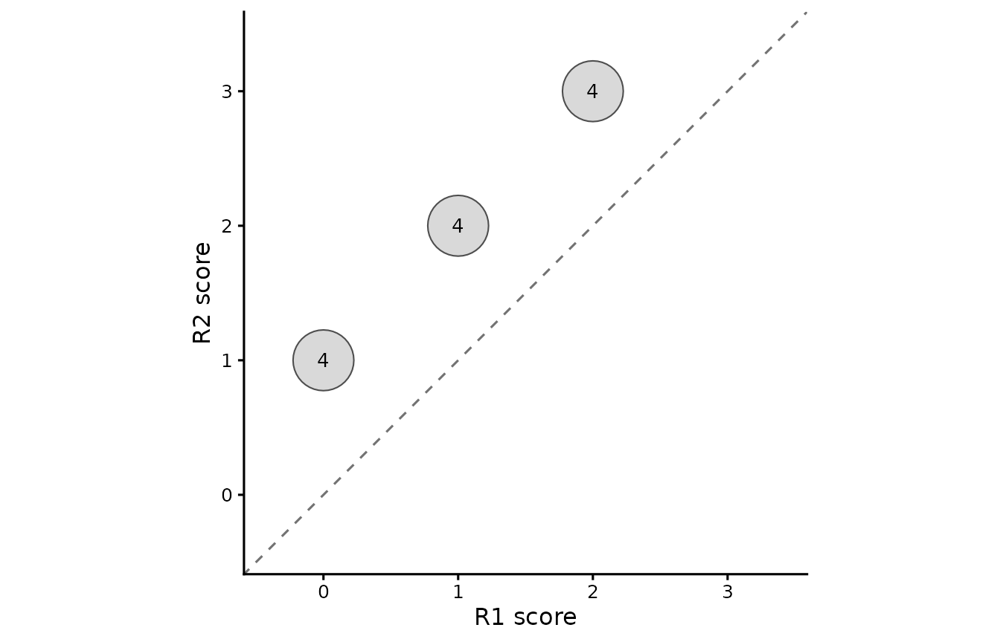
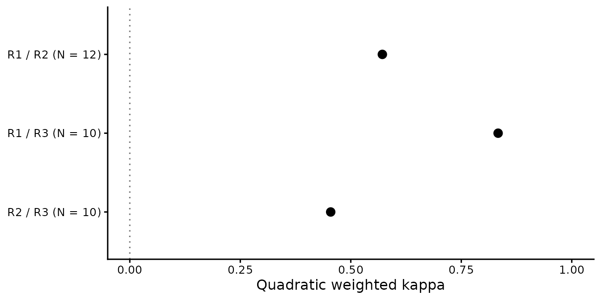

Rating agreement and score comparisons
Source:vignettes/mfrmr-rating-agreement.Rmd
mfrmr-rating-agreement.RmdTwo raters can rank responses identically while assigning different
scores. This tutorial shows how to detect that distinction, match the
right rating records, and retain the sample behind each coefficient. It
uses small synthetic data and fits no measurement model. Run the code
blocks in order with mfrmr installed. For importing your
own CSV or fitting a model, start with the ordinary workflow.
Choose the question before the coefficient
| Your question | Starting point | What the result describes |
|---|---|---|
| Do two raters give similar category scores to the same responses? | pairwise_kappa_table() |
Weighted agreement for each pair on its common complete units. |
| How much agreement is present across the panel? |
krippendorff_alpha_table() or
gwet_ac2_table()
|
A pooled coefficient under a stated distance/weighting and chance model. Their definitions differ. |
| Does a score source agree with a chosen reference, track its variation, or shift its mean? | score_comparison_table() |
QWK, correlation and standardized mean difference on aligned records. A reference is not automatically correct. |
| Which rater is stricter after accounting for the fitted facets? |
fit_mfrm(), then individual estimates and
diagnostics |
Model-adjusted severity. High rater separation reliability means distinguishable severities, not agreement. |
| Does a rater tend to compress scores toward the middle? | rater_centrality_table() |
Indirect RSM residual and/or rater-specific PCM threshold descriptions, with their source status. |
| How accurately do raters match supplied expert benchmark ratings? | fit_rater_accuracy() |
A separate Rasch model of exact-match indicators; the benchmark and its alignment must be justified. |
This lesson works through the first three questions. A high correlation does not establish agreement, agreement does not establish benchmark accuracy, and a low Infit value alone does not diagnose centrality. For the distinction between observed agreement and model-based reporting, see Reporting and APA.
The methods
guide also distinguishes the denominators and saving routes. In
particular, interrater_agreement_table() reports
model-implied expected exact agreement from fitted category
probabilities; this is not the chance-agreement term used by kappa or
AC2. Residual association answers another question: whether departures
from the fitted model vary together. Neither raw agreement nor residual
association alone establishes the other.
1. Identify the rated unit
Six people each complete two tasks, scored on the permitted
categories 0, 1, 2, 3. Rater R2 deliberately gives every
response one category more than R1. R3 has a few different scores, one
missing score and one absent row. These existing teaching data are
included in mfrmr: data() loads the table, and the next
line gives it the shorter name ratings. You do not need to
construct scores or run a simulation before following this lesson.
library(mfrmr)
data("mfrmr_example_agreement", package = "mfrmr")
ratings <- mfrmr_example_agreement
head(ratings)
#> Person Task Rater Score
#> 1 P01 T1 R1 0
#> 2 P01 T2 R1 1
#> 3 P02 T1 R1 2
#> 4 P02 T2 R1 0
#> 5 P03 T1 R1 1
#> 6 P03 T2 R1 2
with(ratings, table(Rater, Score, useNA = "ifany"))
#> Score
#> Rater 0 1 2 3 <NA>
#> R1 4 4 4 0 0
#> R2 0 4 4 4 0
#> R3 3 4 3 0 1Here Person and Task together identify one response
to be compared. Person alone would mix different tasks. If
your data also distinguish rubric criteria or occasions, include those
identifiers in unit, for example
c("Person", "Task", "Criterion", "Occasion").
There must be at most one row for each rater and unit:
key <- c("Person", "Task", "Rater")
stopifnot(anyDuplicated(ratings[key]) == 0L)An assertion failure means the key repeats. Check whether a task or
occasion column is missing from the key, or whether a row was
accidentally duplicated. Do not silently average or delete repeated
ratings. The unit argument matches records; it does not fit
separate Person and Task variance components.
There are 35 input rows and 34 observed scores. The R3/P06/T2 row has an explicit missing score; R3/P02/T2 has no row. Neither is a score of zero. An absent row alone does not tell us whether a rating was unassigned or an assigned rating was never recorded; that requires the assignment roster.
2. Compare pairs on their shared responses
Declare the complete rubric even if some categories are unused by a rater. Quadratic weighting gives quadratic weighted kappa (QWK): a larger category disagreement receives a larger penalty.
qwk <- pairwise_kappa_table(
ratings, rater = "Rater", unit = c("Person", "Task"), score = "Score",
categories = 0:3, weights = "quadratic"
)
qwk$table[, c("Rater1", "Rater2", "N", "Kappa", "Status")]
#> Rater1 Rater2 N Kappa Status
#> 1 R1 R2 12 0.5714286 available
#> 2 R1 R3 10 0.8333333 available
#> 3 R2 R3 10 0.4545455 availableN is the number of common complete units, not the number
of people or input rows. R1/R2 uses all 12 responses. Each pair
involving R3 uses 10. Each pair uses its own retained sample for both
observed and expected agreement; the three coefficients do not
automatically form a panel average or a ranking of rater quality.
For numeric categories, linear and quadratic weights use the declared
numeric spacing. With character categories they use positions in the
supplied order. Choose this meaning from the rubric. Changing
c(0, 1, 2, 3) to uneven numeric codes changes the weights;
a larger resulting coefficient would not establish better agreement.
Inspect exclusions before interpreting a coefficient.
Unit is an index into qwk$units; attach the
original identifiers to make the audit readable:
pair_audit <- cbind(qwk$cases, qwk$units[qwk$cases$Unit, , drop = FALSE])
subset(pair_audit, !Included,
select = c(Person, Task, Rater1, Rater2,
Assigned1, Assigned2, Missing1, Missing2, Included))
#> Person Task Rater1 Rater2 Assigned1 Assigned2 Missing1 Missing2 Included
#> 4.1 P02 T2 R1 R3 TRUE FALSE FALSE FALSE FALSE
#> 12.1 P06 T2 R1 R3 TRUE TRUE FALSE TRUE FALSE
#> 4.2 P02 T2 R2 R3 TRUE FALSE FALSE FALSE FALSE
#> 12.2 P06 T2 R2 R3 TRUE TRUE FALSE TRUE FALSEAssigned2 = FALSE means that no input row exists for the
second rater on that unit. Assigned2 = TRUE with
Missing2 = TRUE means a row exists but its score is
missing. These are observations about the supplied file, not proof that
the planned assignment was complete.
3. Separate agreement, correlation and mean differences
Suppose R2 is the source under review and R1 is the comparison
reference. Build the two score vectors by joining on the unit
identifiers, not by assuming that two files have the same row order.
all = TRUE retains unmatched units for the subsequent
missing-pair audit instead of discarding them silently.
scored <- subset(ratings, Rater == "R2", select = c(Person, Task, Score))
reference <- subset(ratings, Rater == "R1", select = c(Person, Task, Score))
names(reference)[3] <- "Reference"
stopifnot(anyDuplicated(scored[c("Person", "Task")]) == 0L,
anyDuplicated(reference[c("Person", "Task")]) == 0L)
aligned <- merge(scored, reference, by = c("Person", "Task"), all = TRUE)
comparison <- score_comparison_table(
scores = aligned$Score,
reference = aligned$Reference,
categories = 0:3
)
comparison$table[, c("N", "MeanScore", "MeanReference", "QWK", "Correlation", "SMD")]
#> N MeanScore MeanReference QWK Correlation SMD
#> 1 12 2 1 0.5714286 1 1.172604
mean(aligned$Score == aligned$Reference) # Exact agreement for this complete pair
#> [1] 0For these 12 responses, R2’s mean is 2 and R1’s mean is 1. Correlation is 1, yet exact agreement is 0 and QWK is about 0.571. R2 tracks every score difference while consistently assigning one category more. Thus perfect correlation can coexist with systematic disagreement.
SMD is the mean difference divided by the selected score
SD. Its default pooled-SD version is about +1.173 here; positive values
mean the evaluated source scores higher. This example deliberately
treats the 0-to-3 rubric codes as equally spaced for means and SMD.
Check that score-scale interpretation for your application. SMD does not
adjust for differing task/person assignment and is not an MFRM severity
estimate. Both pooled-SD and reference-SD versions are retained in the
table.
The function does not align records, round continuous scores, or
choose pass/fail criteria for you. For continuous source scores, pass
the original values as scores and an explicitly categorized
vector as score_categories; correlation and SMD use the
original values, while QWK uses the category values. Document the
categorization rule before evaluating the results.
comparison$criteria[, c("Metric", "Value", "Threshold", "Status", "Reason")]
#> Metric Value Threshold Status
#> 1 QWK 0.5714286 NA not_requested
#> 2 Correlation 1.0000000 NA not_requested
#> 3 QWKDegradation NA NA unavailable
#> 4 CorrelationDegradation NA NA unavailable
#> 5 AbsoluteSMD 1.1726039 NA not_requested
#> Reason
#> 1 No threshold requested.
#> 2 No threshold requested.
#> 3 Second reference ratings were not supplied.
#> 4 Second reference ratings were not supplied.
#> 5 No threshold requested.
comparison_cases <- cbind(aligned[c("Person", "Task")], comparison$cases)
comparison_cases
#> Person Task Row Included MissingScore MissingReference MissingScoreCategory
#> 1 P01 T1 1 TRUE FALSE FALSE FALSE
#> 2 P01 T2 2 TRUE FALSE FALSE FALSE
#> 3 P02 T1 3 TRUE FALSE FALSE FALSE
#> 4 P02 T2 4 TRUE FALSE FALSE FALSE
#> 5 P03 T1 5 TRUE FALSE FALSE FALSE
#> 6 P03 T2 6 TRUE FALSE FALSE FALSE
#> 7 P04 T1 7 TRUE FALSE FALSE FALSE
#> 8 P04 T2 8 TRUE FALSE FALSE FALSE
#> 9 P05 T1 9 TRUE FALSE FALSE FALSE
#> 10 P05 T2 10 TRUE FALSE FALSE FALSE
#> 11 P06 T1 11 TRUE FALSE FALSE FALSE
#> 12 P06 T2 12 TRUE FALSE FALSE FALSEnot_requested means a statistic is available but no
threshold was requested. unavailable means the statistic
could not be computed; it does not mean zero agreement. Without a second
reference, the two degradation statistics are unavailable. By default
screen = "none". The explicitly requested
"williamson2012" screen uses numerical examples for an
automated-scoring application; passing those thresholds is not a general
validity certificate. See ?score_comparison_table for the
definitions and application limits.
Add a second reference only when the design supplies one
If R3 is a defensible second reference, its agreement with R1 can supply a baseline. Here it illustrates the calculation, not expert authority.
reference2 <- subset(ratings, Rater == "R3", select = c(Person, Task, Score))
names(reference2)[3] <- "Reference2"
aligned3 <- merge(aligned, reference2, by = c("Person", "Task"), all = TRUE)
with_baseline <- score_comparison_table(
scores = aligned3$Score, reference = aligned3$Reference,
reference2 = aligned3$Reference2, categories = 0:3
)
with_baseline$table[, c("NInput", "N", "NExcluded", "QWK", "ReferenceQWK", "QWKDegradation")]
#> NInput N NExcluded QWK ReferenceQWK QWKDegradation
#> 1 12 10 2 0.5454545 0.8333333 0.2878788
cbind(aligned3[c("Person", "Task")], with_baseline$cases)
#> Person Task Row Included MissingScore MissingReference MissingScoreCategory
#> 1 P01 T1 1 TRUE FALSE FALSE FALSE
#> 2 P01 T2 2 TRUE FALSE FALSE FALSE
#> 3 P02 T1 3 TRUE FALSE FALSE FALSE
#> 4 P02 T2 4 FALSE FALSE FALSE FALSE
#> 5 P03 T1 5 TRUE FALSE FALSE FALSE
#> 6 P03 T2 6 TRUE FALSE FALSE FALSE
#> 7 P04 T1 7 TRUE FALSE FALSE FALSE
#> 8 P04 T2 8 TRUE FALSE FALSE FALSE
#> 9 P05 T1 9 TRUE FALSE FALSE FALSE
#> 10 P05 T2 10 TRUE FALSE FALSE FALSE
#> 11 P06 T1 11 TRUE FALSE FALSE FALSE
#> 12 P06 T2 12 FALSE FALSE FALSE FALSE
#> MissingReference2
#> 1 FALSE
#> 2 FALSE
#> 3 FALSE
#> 4 TRUE
#> 5 FALSE
#> 6 FALSE
#> 7 FALSE
#> 8 FALSE
#> 9 FALSE
#> 10 FALSE
#> 11 FALSE
#> 12 TRUEAll statistics now use the same 10 complete three-source responses.
Adding R3 changes the sample even for the R2/R1 statistics, so do not
interpret their change from the 12-response analysis as a change in
scorer performance. QWKDegradation is
ReferenceQWK - QWK: positive values mean less agreement
with R1 than the R3/R1 baseline, and negative values mean more. Baseline
agreement is itself sample-dependent; it does not establish either
reference’s correctness.
4. Describe panel agreement under a declared definition
For a panel coefficient, compute the intended coefficient directly rather than averaging the pairwise kappas:
alpha <- krippendorff_alpha_table(
ratings, rater = "Rater", unit = c("Person", "Task"), score = "Score",
level = "ordinal", categories = 0:3
)
ac2 <- gwet_ac2_table(
ratings, rater = "Rater", unit = c("Person", "Task"), score = "Score",
categories = 0:3, weights = "quadratic"
)
alpha$table[, c("Alpha", "Level", "Status", "PairableUnits", "PairableRatings")]
#> Alpha Level Status PairableUnits PairableRatings
#> 1 0.5666233 ordinal available 12 34
ac2$table[, c("AC", "Coefficient", "Status", "PairableUnits", "NonmissingRatings")]
#> AC Coefficient Status PairableUnits NonmissingRatings
#> 1 0.6996106 AC2 available 12 34
alpha$unit_summary
#> Unit AssignedRows NonmissingRatings MissingScores AbsentAssignments Included
#> 1 1 3 3 0 0 TRUE
#> 2 2 3 3 0 0 TRUE
#> 3 3 3 3 0 0 TRUE
#> 4 4 2 2 0 1 TRUE
#> 5 5 3 3 0 0 TRUE
#> 6 6 3 3 0 0 TRUE
#> 7 7 3 3 0 0 TRUE
#> 8 8 3 3 0 0 TRUE
#> 9 9 3 3 0 0 TRUE
#> 10 10 3 3 0 0 TRUE
#> 11 11 3 3 0 0 TRUE
#> 12 12 3 2 1 0 TRUE
#> ObservedDisagreement
#> 1 0.05204729
#> 2 0.07626874
#> 3 0.15844867
#> 4 0.07807093
#> 5 0.07626874
#> 6 0.03243945
#> 7 0.05204729
#> 8 0.07626874
#> 9 0.03243945
#> 10 0.05204729
#> 11 0.07626874
#> 12 0.04865917These coefficients are not interchangeable implementations of the same formula. Ordinal alpha uses distances based on the frequencies of pairable categories; it is not QWK with a different name. AC2 here uses quadratic category weights and a different chance-agreement model. The help pages document the detailed definitions; the following differences matter when reading incomplete panels:
| Feature | Krippendorff’s alpha | Gwet AC2 in this call |
|---|---|---|
| Units with two or more observed ratings | Supply observed and expected disagreement. Unequal rating counts affect unit contributions. | Supply observed agreement, with equal weight per unit. |
| A unit with exactly one observed rating | Does not enter the coefficient. | Contributes to category proportions for expected agreement, but not observed agreement. |
| Unused categories | Do not alter ordinal pairable distances. | Remain part of the declared category universe and can change expected agreement. |
The present example has at least two observed ratings on every unit.
Use $unit_summary and $cases to establish that
for your data. These functions do not correct selective assignment or
missingness. Choosing whichever coefficient is largest after looking at
the results changes the reporting question. Krippendorff’s alpha is also
distinct from Cronbach’s internal- consistency alpha.
If your question instead concerns scores on a meaningful interval
scale, pairwise_icc_table() distinguishes absolute
agreement from consistency and a single rating from the mean of two
ratings. Numeric ordinal codes alone do not establish its interval-scale
assumption. See ?pairwise_icc_table; the function’s
pairwise average-rating ICC concerns two ratings, not the average of a
whole panel.
5. See the disagreement, then compare the coefficients
The following figures answer two different questions: where do
matched scores fall, and how much weighted agreement does each pair
show? They use the saved qwk result directly. They do not
refit a model or estimate uncertainty. The optional ggplot2
package is needed only for these figures; all preceding tables remain
usable without it. For model-based figures such as Wright maps and
category curves, use the visual
diagnostics guide.
Matched-score counts
A plain scatterplot would hide repeated score combinations. Use the
retained contingency counts instead: each circle’s area and printed
number show how many matched responses occupy that cell. The dashed
diagonal marks identical scores. Category indices in
$counts are positions in $categories, not the
rubric’s score values; use the category labels on the axes.
can_plot <- requireNamespace("ggplot2", quietly = TRUE)
figures <- list()
selected_pair <- subset(qwk$table, Rater1 == "R1" & Rater2 == "R2")
score_counts <- subset(qwk$counts, Pair == selected_pair$Pair)
category_index <- qwk$categories$CategoryIndex
category_labels <- qwk$categories$Category
if (can_plot) {
figures$score_counts <- ggplot2::ggplot(
score_counts, ggplot2::aes(x = Category1, y = Category2)
) +
ggplot2::geom_abline(slope = 1, intercept = 0, linetype = "dashed",
colour = "grey45") +
ggplot2::geom_point(ggplot2::aes(size = N), shape = 21,
fill = "grey85", colour = "grey30") +
ggplot2::geom_text(ggplot2::aes(label = N), size = 3.5) +
ggplot2::scale_size_area(max_size = 14, guide = "none") +
ggplot2::scale_x_continuous(breaks = category_index, labels = category_labels) +
ggplot2::scale_y_continuous(breaks = category_index, labels = category_labels) +
ggplot2::coord_equal(xlim = range(category_index) + c(-0.4, 0.4),
ylim = range(category_index) + c(-0.4, 0.4)) +
ggplot2::labs(x = "R1 score", y = "R2 score", title = NULL, caption = NULL) +
ggplot2::theme_classic(base_size = 12)
print(figures$score_counts)
}
All 12 responses sit one category above the diagonal. This makes the
systematic shift visible despite the correlation of 1. Blank cells mean
no retained responses with that score combination; they do not identify
missing ratings. The $cases audit remains the source for
exclusions. R1 is the comparison reference here, not an established
correct answer.
Pairwise QWK with its sample size
Keep pairs in their original order and show each retained sample size. Sorting by QWK would invite a ranking even though the pairs can involve different responses. The zero line is the coefficient’s chance-agreement reference, not a quality threshold. There are no confidence intervals or quality bands.
pair_plot_data <- qwk$table
pair_plot_data$PairLabel <- with(pair_plot_data,
paste0(Rater1, " / ", Rater2, " (N = ", N, ")",
ifelse(Status == "available", "", paste0("; ", Status))))
pair_plot_data$PairLabel <- factor(pair_plot_data$PairLabel,
levels = rev(pair_plot_data$PairLabel))
if (can_plot) {
figures$pairwise_qwk <- ggplot2::ggplot(
pair_plot_data, ggplot2::aes(x = Kappa, y = PairLabel)
) +
ggplot2::geom_vline(xintercept = 0, linetype = "dotted", colour = "grey45") +
ggplot2::geom_point(data = subset(pair_plot_data,
Status == "available" & is.finite(Kappa)), size = 3) +
ggplot2::scale_y_discrete(drop = FALSE) +
ggplot2::expand_limits(x = c(0, 1)) +
ggplot2::labs(x = "Quadratic weighted kappa", y = NULL,
title = NULL, caption = NULL) +
ggplot2::theme_classic(base_size = 12)
print(figures$pairwise_qwk)
}
expand_limits() includes 0 and 1 without removing
negative estimates. Unavailable pairs retain their labelled row and
status, with no point; an unavailable value must not be drawn at zero.
This example’s three estimates are all available. Read the values with
the exclusion audit rather than as evidence that one rater is more
accurate or less severe.
These are custom ggplot recipes from
pairwise_kappa_table() results, not new mfrmr plot methods.
The existing plot() displays exact agreement or correlation
from a fitted-model workflow, not QWK. Keep suggested titles and
interpretation notes outside the drawing and save them with the source
data:
figure_titles <- c(score_counts = "Matched score counts for R1 and R2",
pairwise_qwk = "Pairwise quadratic weighted agreement")
figure_notes <- list(
score_counts = c(
"Circle area and printed counts describe common complete responses; the diagonal marks equal scores.",
"Blank cells are zero retained counts, not missing-rating indicators. Inspect qwk$cases for exclusions.",
"The reference is not assumed correct; observed score differences are not model-adjusted severity."
),
pairwise_qwk = c(qwk$notes,
"N is pair-specific. The zero line is a chance reference, not an acceptance threshold; no intervals are shown.")
)
figure_titles
#> score_counts pairwise_qwk
#> "Matched score counts for R1 and R2" "Pairwise quadratic weighted agreement"
figure_notes
#> $score_counts
#> [1] "Circle area and printed counts describe common complete responses; the diagonal marks equal scores."
#> [2] "Blank cells are zero retained counts, not missing-rating indicators. Inspect qwk$cases for exclusions."
#> [3] "The reference is not assumed correct; observed score differences are not model-adjusted severity."
#>
#> $pairwise_qwk
#> [1] "Both margins use the same common complete units as observed agreement."
#> [2] "Different pair cohorts affect comparability; pairwise kappas are not a panel coefficient."
#> [3] "Agreement is distinct from reference accuracy, MFRM fit and separation reliability."
#> [4] "No confidence intervals, tests, quality cutoffs or correction for selective missingness are supplied."
#> [5] "N is pair-specific. The zero line is a chance reference, not an acceptance threshold; no intervals are shown."6. Save the evidence and state the answer
Keep the full results, matched identifiers and resolved settings together. CSV tables are useful for inspection, but a coefficient table alone loses the exclusion audit and interpretation notes.
analysis <- list(
ratings = ratings, qwk = qwk, alpha = alpha, ac2 = ac2,
aligned = aligned, comparison = comparison,
aligned3 = aligned3, with_baseline = with_baseline,
figures = figures, figure_titles = figure_titles, figure_notes = figure_notes,
figure_data = list(score_counts = score_counts, pairwise_qwk = pair_plot_data),
session = sessionInfo()
)
output_dir <- tempfile("rating-agreement-")
dir.create(output_dir)
saveRDS(analysis, file.path(output_dir, "analysis.rds"))
write.csv(qwk$table, file.path(output_dir, "pairwise-qwk.csv"), row.names = FALSE)
write.csv(comparison$table, file.path(output_dir, "score-comparison.csv"), row.names = FALSE)
write.csv(comparison_cases, file.path(output_dir, "matched-cases.csv"), row.names = FALSE)
if (can_plot) {
ggplot2::ggsave(file.path(output_dir, "score-counts.png"), figures$score_counts,
width = 7, height = 4.5, units = "in", dpi = 150)
ggplot2::ggsave(file.path(output_dir, "pairwise-qwk.png"), figures$pairwise_qwk,
width = 7, height = 3.5, units = "in", dpi = 150)
}
restored <- readRDS(file.path(output_dir, "analysis.rds"))
restored$comparison$table[, c("N", "QWK", "Correlation", "SMD")]
#> N QWK Correlation SMD
#> 1 12 0.5714286 1 1.172604
restored$qwk$notes
#> [1] "Both margins use the same common complete units as observed agreement."
#> [2] "Different pair cohorts affect comparability; pairwise kappas are not a panel coefficient."
#> [3] "Agreement is distinct from reference accuracy, MFRM fit and separation reliability."
#> [4] "No confidence intervals, tests, quality cutoffs or correction for selective missingness are supplied."
# With ggplot2 installed: print(restored$figures$pairwise_qwk)output_dir contains the practice files. Use a new
permanent study directory for work you want to retain, and keep the
analysis script. Reopening the RDS does not recompute coefficients.
Check identifiers before sharing real data. The saved figures, drawing
data, suggested titles and notes remain together in
analysis.rds; PNG files alone do not preserve that context.
Redrawing a saved ggplot needs a compatible ggplot2 installation. The
recorded session helps identify the version used.
A concise description of the worked pair would be:
On 12 matched person-by-task responses with declared categories 0 through 3, R2 scored every response one category higher than R1. Correlation was 1.00, but exact agreement was 0% and quadratic weighted kappa was 0.571. These results describe the observed pair; they do not estimate model-adjusted severity or establish reference accuracy.
For a real study, also report which records were excluded, the category weights or distance definition, the assignment design and why the chosen reference is suitable. These interfaces return descriptive point estimates, not confidence intervals or universal quality bands. Two tasks from one person are two matched response units here, not evidence of two independent people for subsequent sampling inference.
When a result needs investigation
| What you see | How to investigate |
|---|---|
| A duplicate rater-unit error | Check the composite key and distinguish accidental duplication from separate tasks, criteria or occasions. |
| Few common complete units | Inspect $cases and the assignment roster. Different
pairs can involve different samples. Do not fill absent scores with
zero. |
NA for kappa or alpha |
Read Status; there may be too few pairable observations
or no expected disagreement. Do not replace an unavailable coefficient
with 0 or 1. |
| A negative coefficient | Retain it and inspect the rating table and definition. These functions do not truncate negative estimates to zero. |
| AC2 differs from alpha or kappa | Check the chance model, weighting, category universe and contributing units before attributing the difference to software. |
Fewer records after adding reference2
|
Every comparison statistic uses complete records across all supplied vectors; inspect the new case audit. |
| High rater separation reliability alongside low agreement | Separation describes distinguishable model-adjusted severities; it is not an agreement coefficient. Low separation can reflect imprecision and does not prove agreement either. |
Use ?pairwise_kappa_table,
?krippendorff_alpha_table, ?gwet_ac2_table and
?score_comparison_table for formulas, argument details and
references. For a broader question-to-function map, use
mfrmr_output_guide("feedback"). Future pass/fail accuracy
under an explicit rating plan is a different question; see
?classification_table for its fixed-calibration assumptions
and cut scales.